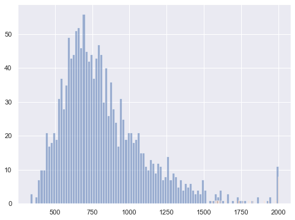

Merging logfiles OpenSesame
Merging logfiles OpenSesame¶
TODO
from matplotlib import pyplot as plt
import os
import numpy as np
from datamatrix import DataMatrix, io, operations as ops
import pandas as pd
Now a text here
df = pd.read_csv('data/subject-0_CI.csv')
print(df)
ID acc accept_status accuracy age average_response_time \
0 14 100.000000 yes 100.000000 23 17079
1 34 100.000000 yes 100.000000 23 13885
2 12 100.000000 yes 100.000000 23 11807
3 5 85.714286 yes 85.714286 23 10212
4 31 87.500000 yes 87.500000 23 9018
.. ... ... ... ... ... ...
271 3 97.472924 yes 97.472924 23 980
272 45 97.482014 yes 97.482014 23 979
273 100 97.491039 yes 97.491039 23 977
274 110 97.500000 yes 97.500000 23 976
275 29 97.508897 yes 97.508897 23 974
avg_rt background bidi block ... time_practice time_stroop \
0 17079 #ffffff no practice ... 123799 123895
1 13885 #ffffff no practice ... 123799 126701
2 11807 #ffffff no practice ... 123799 129972
3 10212 #ffffff no practice ... 123799 133556
4 9018 #ffffff no practice ... 123799 136370
.. ... ... ... ... ... ... ...
271 980 #ffffff no I ... 123799 917937
272 979 #ffffff no I ... 123799 920705
273 977 #ffffff no I ... 123799 923590
274 976 #ffffff no I ... 123799 926349
275 974 #ffffff no I ... 123799 929072
time_target title total_correct total_response_time total_responses \
0 124469 Stroop CI 4 68319 4
1 127275 Stroop CI 5 69428 5
2 130547 Stroop CI 6 70842 6
3 134130 Stroop CI 6 71484 7
4 136944 Stroop CI 7 72150 8
.. ... ... ... ... ...
271 918511 Stroop CI 270 271492 277
272 921279 Stroop CI 271 272211 278
273 924164 Stroop CI 272 272818 279
274 926925 Stroop CI 273 273312 280
275 929647 Stroop CI 274 273802 281
uniform_coordinates width word
0 yes 1366 RED
1 yes 1366 LOT
2 yes 1366 GREEN
3 yes 1366 GREEN
4 yes 1366 LOT
.. ... ... ...
271 yes 1366 BLUE
272 yes 1366 YELLOW
273 yes 1366 BLUE
274 yes 1366 KNIFE
275 yes 1366 RED
[276 rows x 124 columns]
df
| ID | acc | accept_status | accuracy | age | average_response_time | avg_rt | background | bidi | block | ... | time_practice | time_stroop | time_target | title | total_correct | total_response_time | total_responses | uniform_coordinates | width | word | |
|---|---|---|---|---|---|---|---|---|---|---|---|---|---|---|---|---|---|---|---|---|---|
| 0 | 14 | 100.000000 | yes | 100.000000 | 23 | 17079 | 17079 | #ffffff | no | practice | ... | 123799 | 123895 | 124469 | Stroop CI | 4 | 68319 | 4 | yes | 1366 | RED |
| 1 | 34 | 100.000000 | yes | 100.000000 | 23 | 13885 | 13885 | #ffffff | no | practice | ... | 123799 | 126701 | 127275 | Stroop CI | 5 | 69428 | 5 | yes | 1366 | LOT |
| 2 | 12 | 100.000000 | yes | 100.000000 | 23 | 11807 | 11807 | #ffffff | no | practice | ... | 123799 | 129972 | 130547 | Stroop CI | 6 | 70842 | 6 | yes | 1366 | GREEN |
| 3 | 5 | 85.714286 | yes | 85.714286 | 23 | 10212 | 10212 | #ffffff | no | practice | ... | 123799 | 133556 | 134130 | Stroop CI | 6 | 71484 | 7 | yes | 1366 | GREEN |
| 4 | 31 | 87.500000 | yes | 87.500000 | 23 | 9018 | 9018 | #ffffff | no | practice | ... | 123799 | 136370 | 136944 | Stroop CI | 7 | 72150 | 8 | yes | 1366 | LOT |
| ... | ... | ... | ... | ... | ... | ... | ... | ... | ... | ... | ... | ... | ... | ... | ... | ... | ... | ... | ... | ... | ... |
| 271 | 3 | 97.472924 | yes | 97.472924 | 23 | 980 | 980 | #ffffff | no | I | ... | 123799 | 917937 | 918511 | Stroop CI | 270 | 271492 | 277 | yes | 1366 | BLUE |
| 272 | 45 | 97.482014 | yes | 97.482014 | 23 | 979 | 979 | #ffffff | no | I | ... | 123799 | 920705 | 921279 | Stroop CI | 271 | 272211 | 278 | yes | 1366 | YELLOW |
| 273 | 100 | 97.491039 | yes | 97.491039 | 23 | 977 | 977 | #ffffff | no | I | ... | 123799 | 923590 | 924164 | Stroop CI | 272 | 272818 | 279 | yes | 1366 | BLUE |
| 274 | 110 | 97.500000 | yes | 97.500000 | 23 | 976 | 976 | #ffffff | no | I | ... | 123799 | 926349 | 926925 | Stroop CI | 273 | 273312 | 280 | yes | 1366 | KNIFE |
| 275 | 29 | 97.508897 | yes | 97.508897 | 23 | 974 | 974 | #ffffff | no | I | ... | 123799 | 929072 | 929647 | Stroop CI | 274 | 273802 | 281 | yes | 1366 | RED |
276 rows × 124 columns
from datamatrix import io
dm = io.readtxt('data/subject-0_CI.csv')
print(dm)
+----+----+---------------+---------------+---------------+-----+-----------------------+
| # | ID | acc | accept_status | accuracy | age | average_response_time |
+----+----+---------------+---------------+---------------+-----+-----------------------+
| 0 | 14 | 100 | yes | 100 | 23 | 17079 |
| 1 | 34 | 100 | yes | 100 | 23 | 13885 |
| 2 | 12 | 100 | yes | 100 | 23 | 11807 |
| 3 | 5 | 85.7142857143 | yes | 85.7142857143 | 23 | 10212 |
| 4 | 31 | 87.5 | yes | 87.5 | 23 | 9018 |
| 5 | 25 | 88.8888888889 | yes | 88.8888888889 | 23 | 8104 |
| 6 | 24 | 90 | yes | 90 | 23 | 7438 |
| 7 | 2 | 90.9090909091 | yes | 90.9090909091 | 23 | 6844 |
| 8 | 33 | 91.6666666667 | yes | 91.6666666667 | 23 | 6339 |
| 9 | 9 | 92.3076923077 | yes | 92.3076923077 | 23 | 5933 |
| 10 | 11 | 92.8571428571 | yes | 92.8571428571 | 23 | 5580 |
| 11 | 20 | 93.3333333333 | yes | 93.3333333333 | 23 | 5267 |
| 12 | 17 | 93.75 | yes | 93.75 | 23 | 4996 |
| 13 | 16 | 94.1176470588 | yes | 94.1176470588 | 23 | 4739 |
| 14 | 26 | 94.4444444444 | yes | 94.4444444444 | 23 | 4510 |
| 15 | 22 | 94.7368421053 | yes | 94.7368421053 | 23 | 4314 |
| 16 | 28 | 95 | yes | 95 | 23 | 4128 |
| 17 | 29 | 95.2380952381 | yes | 95.2380952381 | 23 | 3966 |
| 18 | 4 | 95.4545454545 | yes | 95.4545454545 | 23 | 3813 |
| 19 | 13 | 95.652173913 | yes | 95.652173913 | 23 | 3671 |
+----+----+---------------+---------------+---------------+-----+-----------------------+
(+ 118 columns not shown)
(+ 256 rows not shown)
#r"C:\Users\steenbergenhvan1\surfdrive\Virtual_P\My Documents\Teaching\2022-2023\Experimentation I nw style\Exp1Docs_Shared\07_Files\data"
dm = io.readtxt(r"C:\Users\steenbergenhvan1\surfdrive\Virtual_P\My Documents\Teaching\2022-2023\Experimentation I nw style\Exp1Docs_Shared\07_Files\data\subject-0_CI - copy.csv")
print(dm)
+----+----+---------------+---------------+---------------+-----+-----------------------+
| # | ID | acc | accept_status | accuracy | age | average_response_time |
+----+----+---------------+---------------+---------------+-----+-----------------------+
| 0 | 14 | 100 | yes | 100 | 23 | 17079 |
| 1 | 34 | 100 | yes | 100 | 23 | 13885 |
| 2 | 12 | 100 | yes | 100 | 23 | 11807 |
| 3 | 5 | 85.7142857143 | yes | 85.7142857143 | 23 | 10212 |
| 4 | 31 | 87.5 | yes | 87.5 | 23 | 9018 |
| 5 | 25 | 88.8888888889 | yes | 88.8888888889 | 23 | 8104 |
| 6 | 24 | 90 | yes | 90 | 23 | 7438 |
| 7 | 2 | 90.9090909091 | yes | 90.9090909091 | 23 | 6844 |
| 8 | 33 | 91.6666666667 | yes | 91.6666666667 | 23 | 6339 |
| 9 | 9 | 92.3076923077 | yes | 92.3076923077 | 23 | 5933 |
| 10 | 11 | 92.8571428571 | yes | 92.8571428571 | 23 | 5580 |
| 11 | 20 | 93.3333333333 | yes | 93.3333333333 | 23 | 5267 |
| 12 | 17 | 93.75 | yes | 93.75 | 23 | 4996 |
| 13 | 16 | 94.1176470588 | yes | 94.1176470588 | 23 | 4739 |
| 14 | 26 | 94.4444444444 | yes | 94.4444444444 | 23 | 4510 |
| 15 | 22 | 94.7368421053 | yes | 94.7368421053 | 23 | 4314 |
| 16 | 28 | 95 | yes | 95 | 23 | 4128 |
| 17 | 29 | 95.2380952381 | yes | 95.2380952381 | 23 | 3966 |
| 18 | 4 | 95.4545454545 | yes | 95.4545454545 | 23 | 3813 |
| 19 | 13 | 95.652173913 | yes | 95.652173913 | 23 | 3671 |
+----+----+---------------+---------------+---------------+-----+-----------------------+
(+ 118 columns not shown)
(+ 256 rows not shown)
# Change this to the folder that contains the .csv files
SRC_FOLDER = 'data'
# Change this to a list of column names that you want to keep
COLUMNS_TO_KEEP = [
'subject_nr',
'congruency',
'response_time',
'acc'
]
dm = DataMatrix()
for basename in os.listdir(SRC_FOLDER):
path = os.path.join(SRC_FOLDER, basename)
print('Reading {}'.format(path))
dm <<= ops.keep_only(io.readtxt(path), *COLUMNS_TO_KEEP)
io.writetxt(dm, 'merged-data.csv')
Reading data\CI_RSI2000_test.csv
Reading data\subject-0_CI.csv
Reading data\subject-11_CI.csv
Reading data\subject-12_IC.csv
Reading data\subject-13_CI.csv
Reading data\subject-14_IC.csv
Reading data\subject-1_IC.csv
Reading data\subject-3_CI.csv
Reading data\subject-4_IC.csv
Reading data\subject-5_CI.csv
Reading data\subject-6.csv
Reading data\subject-7_IC.csv
Reading data\subject-9_IC.csv
dm = io.readtxt('merged-data.csv')
df = pd.read_csv('merged-data.csv')
plt.plot(dm.subject_nr, dm.acc, ',')
[<matplotlib.lines.Line2D at 0x20a45fa4220>]
#check counts
pd.pivot_table(
dm,
values="acc",
index=["subject_nr"],
columns=["congruency"],
aggfunc=len,
)
| congruency | con | inc | neutral |
|---|---|---|---|
| subject_nr | |||
| 0 | 480 | 480 | 144 |
| 1 | 120 | 120 | 36 |
| 3 | 120 | 120 | 36 |
| 4 | 120 | 120 | 36 |
| 5 | 120 | 120 | 36 |
| 6 | 120 | 120 | 36 |
| 9 | 120 | 120 | 36 |
| 11 | 120 | 120 | 36 |
| 12 | 120 | 120 | 36 |
| 13 | 120 | 120 | 36 |
#datamatrix syntax
plt.figure(figsize=(8,6))
plt.hist((dm.congruency == 'con').response_time, bins=100, alpha=0.5, label="data1")
plt.hist((dm.congruency == 'inc').response_time, bins=100, alpha=0.5, label="data2")
(array([ 3., 0., 2., 7., 10., 10., 21., 17., 18., 21., 19., 31., 37.,
28., 35., 49., 43., 44., 51., 52., 46., 56., 45., 42., 44., 37.,
43., 47., 44., 30., 40., 26., 36., 28., 24., 17., 31., 25., 19.,
21., 21., 18., 19., 21., 15., 15., 11., 10., 13., 12., 9., 12.,
11., 7., 8., 14., 7., 9., 8., 5., 7., 4., 6., 5., 6.,
4., 3., 4., 3., 7., 4., 0., 1., 2., 5., 5., 5., 1.,
1., 3., 0., 1., 1., 3., 1., 2., 1., 1., 1., 2., 0.,
2., 0., 0., 1., 2., 2., 0., 1., 19.]),
array([ 334. , 350.66, 367.32, 383.98, 400.64, 417.3 , 433.96,
450.62, 467.28, 483.94, 500.6 , 517.26, 533.92, 550.58,
567.24, 583.9 , 600.56, 617.22, 633.88, 650.54, 667.2 ,
683.86, 700.52, 717.18, 733.84, 750.5 , 767.16, 783.82,
800.48, 817.14, 833.8 , 850.46, 867.12, 883.78, 900.44,
917.1 , 933.76, 950.42, 967.08, 983.74, 1000.4 , 1017.06,
1033.72, 1050.38, 1067.04, 1083.7 , 1100.36, 1117.02, 1133.68,
1150.34, 1167. , 1183.66, 1200.32, 1216.98, 1233.64, 1250.3 ,
1266.96, 1283.62, 1300.28, 1316.94, 1333.6 , 1350.26, 1366.92,
1383.58, 1400.24, 1416.9 , 1433.56, 1450.22, 1466.88, 1483.54,
1500.2 , 1516.86, 1533.52, 1550.18, 1566.84, 1583.5 , 1600.16,
1616.82, 1633.48, 1650.14, 1666.8 , 1683.46, 1700.12, 1716.78,
1733.44, 1750.1 , 1766.76, 1783.42, 1800.08, 1816.74, 1833.4 ,
1850.06, 1866.72, 1883.38, 1900.04, 1916.7 , 1933.36, 1950.02,
1966.68, 1983.34, 2000. ]),
<BarContainer object of 100 artists>)

#dataframe syntax
plt.figure(figsize=(8,6));
plt.hist(df.query("congruency == 'con'").response_time, bins=100, alpha=0.5, label="data1");
plt.hist(df.query("congruency == 'inc'").response_time, bins=100, alpha=0.5, label="data2");
| acc | congruency | response_time | subject_nr | |
|---|---|---|---|---|
| 0 | 75.000000 | neutral | 1988 | 0 |
| 1 | 80.000000 | neutral | 1060 | 0 |
| 2 | 83.333333 | neutral | 890 | 0 |
| 3 | 85.714286 | inc | 692 | 0 |
| 4 | 87.500000 | neutral | 1155 | 0 |
#df.head()
#df['acc']
#df.acc
#df.iloc[1]
#print(df['congruency'])
#df.shape
#dfg = df.groupby('subject_nr')
#dfg.mean()
#df.groupby('subject_nr').agg([np.sum, np.mean, np.std])
df['rt_zscore'] = df.groupby(['subject_nr','congruency'])['response_time'].transform(lambda x: (x-x.mean())/x.std())
print(df)
acc congruency response_time subject_nr rt_zscore
0 75.000000 neutral 1988 0 5.312859
1 80.000000 neutral 1060 0 1.410521
2 83.333333 neutral 890 0 0.695653
3 85.714286 inc 692 0 -0.196640
4 87.500000 neutral 1155 0 1.810006
... ... ... ... ... ...
3583 88.447653 con 534 9 -0.717676
3584 88.489209 con 566 9 -0.560422
3585 88.530466 con 688 9 0.039109
3586 88.571429 neutral 688 9 -0.311542
3587 88.612100 con 617 9 -0.309799
[3588 rows x 5 columns]
plt.figure(figsize=(8,6));
plt.hist(df.query("congruency == 'inc' & rt_zscore <= 3").response_time, bins=100, alpha=0.5, label="data1");
plt.hist(df.query("congruency == 'inc' & rt_zscore > 3").response_time, bins=100, alpha=0.5, label="data2");

import seaborn as sns
df['is_outlier'] = df['rt_zscore'] > 3
sns.set_theme(style="darkgrid")
sns.displot(
df.query("subject_nr != 0"), x="response_time", col="congruency", row="subject_nr",
binwidth=10, height=3, facet_kws=dict(margin_titles=True), hue = "is_outlier",
)
<seaborn.axisgrid.FacetGrid at 0x20a55c84a90>
df
| acc | congruency | response_time | subject_nr | |
|---|---|---|---|---|
| 0 | 75.000000 | neutral | 1988 | 0 |
| 1 | 80.000000 | neutral | 1060 | 0 |
| 2 | 83.333333 | neutral | 890 | 0 |
| 3 | 85.714286 | inc | 692 | 0 |
| 4 | 87.500000 | neutral | 1155 | 0 |
| ... | ... | ... | ... | ... |
| 3583 | 88.447653 | con | 534 | 9 |
| 3584 | 88.489209 | con | 566 | 9 |
| 3585 | 88.530466 | con | 688 | 9 |
| 3586 | 88.571429 | neutral | 688 | 9 |
| 3587 | 88.612100 | con | 617 | 9 |
3588 rows × 4 columns
df_sum = df.query("rt_zscore <= 3").groupby(['subject_nr','congruency'])['response_time'].mean()
df_sum
subject_nr congruency
0 con 617.957447
inc 720.670213
neutral 702.872340
1 con 704.855932
inc 862.016807
neutral 833.777778
3 con 843.822034
inc 1108.733333
neutral 1039.571429
4 con 893.084746
inc 1094.958333
neutral 1138.527778
5 con 756.854701
inc 823.769231
neutral 813.694444
6 con 715.529412
inc 833.491525
neutral 857.342857
9 con 665.110169
inc 864.487179
neutral 735.714286
11 con 650.593220
inc 684.445378
neutral 726.000000
12 con 722.508475
inc 799.521368
neutral 724.944444
13 con 627.431034
inc 775.016949
neutral 697.805556
Name: response_time, dtype: float64